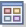
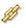

Organization of predefined workspaces
The Enterprise Navigator item has workspaces that query the Tivoli Enterprise Monitoring Server. Use these predefined workspaces to get status information about the monitoring server and monitoring agents and about situations and policies.
Use the Workspace Gallery to see what is available for the Navigator item. These are the Enterprise Navigator item workspaces and the workspaces they link to:
Enterprise Status
- Event Details - Similar by Situation Name
- Event Details - Similar by Source
- Event Details - Similar by Resource
Manage Tivoli Enterprise Monitoring Servers
- Installed Catalogs - Enterprise View
- Installed Catalogs - Remote Server
- Protocols
- Situation Status
- System Information
Managed System Status
- Audit Log
- Agent Operations Log
- History Exports
EIB Change Log
This workspaces displays entries in the Enterprise Information Base (EIB) log. The EIB is a database used by the Tivoli Enterprise Monitoring Server to store situation, policy, user definitions, and configuration information.
Self-Monitoring Topology
The Self-Monitoring Topology workspace provides a high level overview of your managed infrastructure and its health.
Deploy Depot Package List
The Deploy Depot Package List workspace shows the installation packages that are available in the agent depot.
Deployment Status Summary
- Deployment Status by Deploy Group
- Deployment Status by Product
Deployment Status Summary by Transaction
The Deployment Status Summary by Transaction workspace shows summary status information about remote agent deployments, sorted by transaction.
Related reference:
“Enterprise Status workspace” on xref
At the highest level of the Navigator Physical view is the Enterprise item. The default workspace for the Enterprise is called Enterprise Status.
“Manage Tivoli Enterprise Monitoring Servers workspaces” on xref
Use the Manage Tivoli Enterprise Monitoring Servers workspaces and situations to gather information for diagnosing and correcting typical monitoring server configuration issues.
“Managed System Status workspace” on xref
The Managed System Status workspace is one of the predefined workspaces for the Enterprise Navigator item, and offers a high level overview of your managed network. The workspace has a single view: Managed System Status table view.
“EIB Change Log workspace” on xref
The Enterprise Information Base (EIB) is a database used by the Tivoli Enterprise Monitoring Server to store situation, policy, user definitions and configuration information. The EIB Change Log view is a log with details of changes made to information in the database.
“Self-Monitoring Topology workspace” on xref
The Self-Monitoring Topology workspace provides a high level overview of your managed infrastructure and its health and introduces you to the Tivoli Enterprise Portal self-monitoring capabilities.
“Agent deployment workspaces” on xref
Use the agent deployment workspaces to see your package list, the results of a deployment prerequisite check, and the progress of the agent deployment process.